SAGANO BLOG
- >
- SAGANO BLOG
- >
- アカデミックラボ
2025年02月28日


京・平安文化論ラボです！
今年度、最後の取組、鍵善良房様とのコラボ商品の和菓子が完成しました！
『源氏物語』の最後の十帖は、宇治が舞台となっています。
浮舟という女性が、薫と匂宮（におうのみや）という二人の男性に挟まれ、三角関係となって恋物語が進んでいきます。
詳しい内容は、和菓子に説明書をお付けしておりますので、ぜひお読みいただきたく思います。
浮舟と薫をイメージした「流水花」（写真左）
浮舟と匂宮をイメージした「漂揺」（写真右）
デザインにこだわり、それを形にしていただきました。
４日間限定です！ぜひお召し上がりください！
日時：３月１日（土）、２日（日）、２９日（土）、３０日（日）
場所：重要文化財 旧三井家下鴨別邸様
費用：１，０００円（税込）です。（入館料の６００円は、別途必要です。）
事前申し込みは不要です。
旧三井家下鴨別邸様のHPはこちらから！
https://ja.kyoto.travel/event/single.php?event_id=11556


2025年02月10日


1月31日に、令和6年度嵯峨野高校探究成果発表会を開催し、本校2年生全生徒とサイエンス部の1年生がポスターセッション形式で、発表を行いました。1年生も参加し、先輩の発表を見学しました。
コロナ禍以降途絶えていた発表生徒保護者の参観も復活し、厳しい寒さにも関わらず、多くの来賓や学校関係者、保護者の方々にご来場いただきました。
発表生徒たちは、1年間かけて取り組んできた探究の成果を6分という短い時間で伝えるために、様々に工夫を凝らし、熱心に発表していました。質疑応答では、投げかけられる様々な質問に対して、よくぞ聞いてくれましたとばかりに説明を加える姿が印象的でした。次の発表に移るための移動時間も惜しんで、発表者と視聴者とが活発にやりとりをしている姿も見られました。
質疑応答の場面で印象的だったのが、1年生たちの聴く側としての積極的な姿勢です。多くの1年生が積極的に手を挙げ、時間内に全員が質問できないような状況も見受けられました。聴く側の姿勢は、ポスターセッションの成功に欠かせない要素です。来年度、彼らの発表が楽しみです。
探究活動において、発表は一つの節目ではありますが、これで探究が完結するわけではありません。この日得た気づきや学びをきっかけに、さらに探究活動を広げ、深めていきましょう。
2025年01月20日


京・平安文化論ラボです！
嵯峨野高校生による古典入門講座を行います！
高校生の目線で、古典の魅力をお伝えしたいと考えています。
講座の前後に、鶴屋吉信様と京・平安文化論ラボとのコラボ商品である羊羹（枕草子モチーフ「春はあけぼの」、源氏物語モチーフ「紫の想ひ」）を召し上がっていただきます。
日時：２月８日（土）、９日（日）の２日間 ２部制（入れ替え制）
１部は、１３：３０～ ２部は、１５：００～
場所：重要文化財「旧三井家下鴨別邸」様
内容：主に『源氏物語』と『枕草子』をテーマにしています。
２月８日（土）は、①古事記、②桐壺更衣、③藤壺、④紫の上、⑤枕草子
２月９日（日）は、①葵の上、②末摘花、③朧月夜、④明石の君、⑤光源氏、⑥枕草子
というラインナップです。
参加費：１,２００円（税込）です。（入館料の６００円は、別途必要です。）
下鴨神社の糺の森にたたずむ旧三井家下鴨別邸様の美しいお庭を見ながら、楽しい時間を過ごしてみませんか？
お申し込みは、こちらからどうぞ！
https://ja.kyoto.travel/event/single.php?event_id=11296
京・平安文化論ラボ一同、皆様のご参加をお待ちしております！
2024年10月28日
２年生の授業アカデミックラボ「スポーツと環境ラボ」では、昨年度の生徒が考案した「竹モルック」の改良に挑戦しています。
実際に竹林へ行き、竹に関する知識を学んだ後、いただいた竹を加工しました。
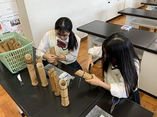
モルックの魅力を広めることも活動の目的の一つですが、竹という材料の良さや放置竹林の問題について多くの方に知ってもらうことも目的としています。
そのためリーフレットを作り、竹モルックを体験していただいた方に配布することにしました。
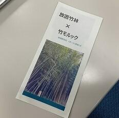
10月19日（土）には、第21回みんなのスポーツフェスタで実際に多くの方に竹モルックを体験していただきました。
幼児から大人まで同じルールで楽しめるのがモルックの魅力です。
参加された皆さんに笑顔で楽しんでいただき、１本１本頑張って手作りした生徒たちも終始笑顔でした。
改善すべき点もいくつか見つかり、今後の活動の方針が見えたようです。
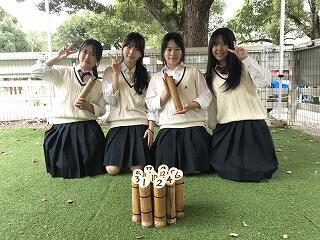
自分たちで考え、行動することで、生徒たちがどんどん逞しくなっているように感じます。
御協力いただいたNPO京都発竹流域ネット様、探究学習支援基金の皆様、京都モルック協会の皆様、ありがとうございました。
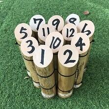
2024年10月09日
アカデミックラボ「京・平安文化論」です。
今年も『源氏物語』の魅力を知っていただくことを目的に、
「ちゅう源氏と巡る 源氏物語 京都スタンプラリー」を実施します。
『源氏物語』に関係する神社仏閣を巡り、その世界に触れていただきたいと考えています。
秋の京都をお楽しみください。
【日程】
１０月２６日（土）、２７日（日）
１１月２日（土）、３日（日）、４日（月休）の５日間です。
【場所】
スタンプ設置場所は、京都市内の『源氏物語』ゆかりの神社仏閣１２ヵ所と特設会場です。
➀京都御苑 ➁下鴨神社 ③上賀茂神社 ④雲林院 ⑤仁和寺 ⑥清凉寺
⑦野宮神社 ⑧天龍寺 ⑨廬山寺 ⑩清水寺 ⑪渉成園 ⑫東寺
〔特設会場〕古典の日フォーラム２０２４ （事前に応募された方のみ）
【台紙の配付】
・本校事務室
・京都市バス・京都バスの車内
・神社仏閣１２ヵ所（特設会場は除きます）
【景品】
スタンプを３つ集めると、オリジナルコットンバッグをプレゼント！
最新情報は、X（旧twitter）やInstagramでお知らせします。
X ＠kyo_heian_labo
Instagram @kyo_heian_labo です。
ぜひご参加ください！
京・平安文化論ラボ一同、お待ちしています！
2024年09月24日
本年度から新たに設立された探究委員会の１年生１～６組の生徒が、３年生の先輩にアカデミックラボの各ラボの魅力についてインタビューを行いました。各ラボを代表する３年生たちは、気さくに真摯に１年生の質問に答えてくれていました。後輩への思いやりと頼もしさを感じます。探究委員の１年生たちは、２学年上の先輩からもらった貴重なアドバイスを１年生全体に紹介する予定です。10月には次年度のアカデミックラボの選択が始まります。先輩からのアドバイスを参考に、自分の興味を広げ、前向きな選択につなげてほしいと思います。
2024年08月20日
８月６～７日に神戸国際展示場で開催された令和６年度SSH生徒研究発表会にアカデミックラボ・理科ラボのメンバー４人が参加しました。
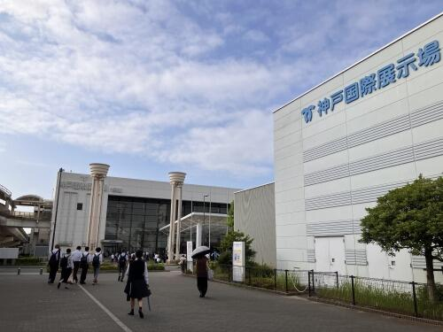北海道から沖縄まで全国のSSH校が神戸に集まり、２３１本の研究発表がありました。
本校は「化粧品に利用可能な植物由来機能性成分を探し求めて」というタイトルで発表しました。
答えやすい質問から専門性が高い質問まで飛び交い、新しい見方や考え方を得ることができました。
わかりやすく他者へ説明する力、深く論理的に思考し議論する力の大切さを学びました。
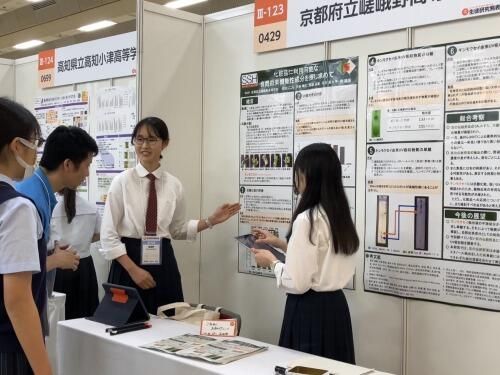
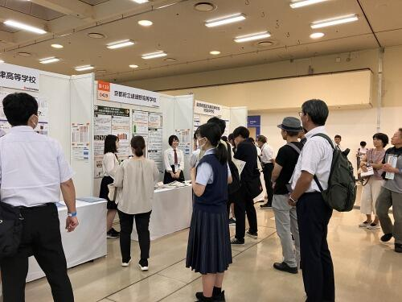
今回の本校の出場チームのようにグループ研究を行っている学校が多い一方で、同じ高校生でも個人研究を行い発表をしている生徒の姿を見て、その熱意や内容理解の深さにとても関心しました。

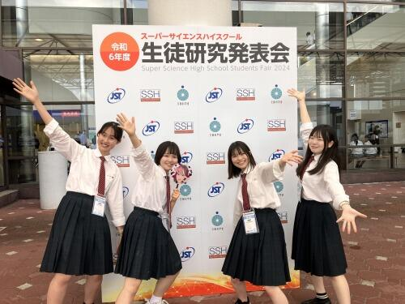
この経験をさらに自分たちの研究に生かし、また後輩たちへ伝えて嵯峨野高校の探究をより盛り上げていきたいと思います。
自らの研究を発表できたことは勿論、他校のレベルの高い研究を見て、様々な意見をもらうことで成長できた２日間でした。
2024年06月13日
京・平安文化論ラボです。
古典離れを課題とし、その課題解決のための探究活動をしています。
その活動の様子を、NHKあさイチ様に取り上げていただけることになりました。
放送は、６月２０日（木）８時１５分からです。
「愛でたいnippon」のコーナーです。
この日は『源氏物語』の特集ということで、その中の１つとしてラボを紹介してくださいます。
どのような活動をしているのか、生徒の様子をぜひ御覧ください。
また、今年度は『源氏物語』と『枕草子』の２テーマで探究活動を行っています。
この作品の魅力を発信するため、文学研究はもとより、京都の神社仏閣を巡っていただくスタンプラリーの企画運営や、登場人物をイメージしたお菓子のデザイン・販売を行う予定です。
文学を読むという方法だけでなく、さまざまな方法で、古典の魅力を知っていただこうと生徒たちは奮闘しています。
2024年06月11日
6月10日 AM「課題研究発表会」
本校では毎年校内での課題研究発表会を行ってきました。今年度は初めて、全校生徒が終日参加し、講演会やワークショップなども組み合わせた、いわば「探究Day」という形でリニューアル開催しました。
午前中は、３年生の課題研究発表会です。体育館での開会式の後、３年生１～６組の生徒はアカデミックラボの研究成果を英語で、３年生７・８組の生徒は、スーパーサイエンスラボⅠ～Ⅲの研究成果をそれぞれプレゼンテーションしました。
アカデミックラボ58件、スーパーサイエンスラボ35件、サイエンス部1件、さらに海外からJunipero Sera High School 2件、Notre Dame Highschool Belmont校1件、合計97件の研究発表が行われる一大イベントとなりました。

当日までに、オンライン上に全ての発表のスライド pdf資料 を閲覧できるようにしました。生徒達は予めこれらを閲覧し、コメントや質疑応答を行いました。英語のスライドは、質問コメントも英語です！
いよいよ当日の発表会。各グループが２～３回ずつ発表を行うため、発表延べ数は268本！ したがって部屋数もHR教室や特別教室併せて35会場と、文字通り全校あげてのイベントとなりました。聴講者は本校全生徒の他、TAとして留学生、教育関係者が来場されました。
アカデミックラボの発表は、質疑応答も全て英語です！質問する側も回答する側も、頭をフル回転させながら真摯に伝えようとする姿が印象的でした。

スーパーサイエンスラボの発表および質疑応答は日本語で行われることもあり、質問する側も回答する側も、科学的・論理的に深いレベルで議論する様子も観られました。各発表の司会は２年生が中心となって取り組みましたが、有志の３年生の他、１年生もチャレンジしてくれました
終了後「これで終わりかと思うと、感慨深いものがあるな･･･」とつぶやいている生徒がいました。今回の経験を自信に変えて、さらに大きな課題解決と夢の実現に向かってくれることと思います。
2024年05月02日
昨年度２月に開催された「アカデミックラボ課題研究発表会」にて、探究活動の成果を発表した３年生１組～６組の生徒たちは、来る６月10日、今度はSGF（Sagano Global Forum）でその内容を英語で発表します。発表当日に向けて英語の原稿作成と発表準備がスタートしました。
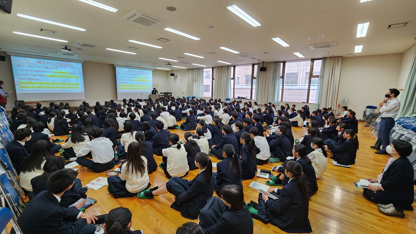
６月10日の発表会では、本校の１・２年生に加えて、京都の大学で研究する留学生や海外の高校からのお客様などを招待し発表を行う予定です。「高校１年生でも分かる」「日本語や日本文化を知らない方にも伝わる」「誰が聞いても分かりやすい」発表を目指しています。
４月15日にはコモンホールにてガイダンスを行いました。「どうすればわかりやすい発表になるか」「ただ英訳しただけの文章を読み上げるのではなく、自分の言葉で相手に伝えるにはどうしたらいいか」を考えながら、他のグループの発表原稿に目を通し、お互いに改善点を指摘しました。
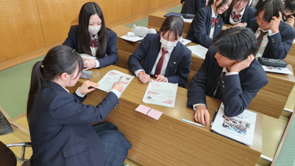
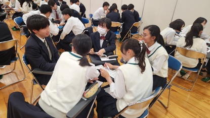
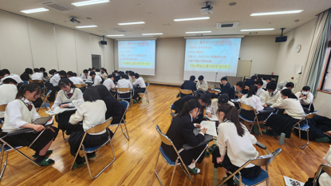
４月23日には指摘された点についてどのように改善すべきかをグループで相談しながら原稿を直しました。生徒からは「正しい英語にしたつもりだったのに、改めて読んだら分かりづらいことに気づいた」「どうしたら伝わる英語になるか、協力して考えることができた」といった声が聞かれました。
発表当日までの１か月半、生きた英語での発表に向け、試行錯誤が続きます。
2024年04月14日
.jpg)
地理オリンピックの一次選抜・二次選抜が終了し、大会本部から嵯峨野高校にメダルと賞状が届きました。
受賞したのは、今春の卒業生と３年生の２名です。３月末と４月８日の伝達表彰時に、校長先生から銅メダルと賞状がそれぞれ授与されました。
嵯峨野高校生が地理オリンピックでメダルを獲得するのは、４年連続となります。嵯峨野高校で複数のメダリストが誕生したのは今回が初めてです。
受賞した２名からのコメントを紹介します。
「地理オリンピックに限らず、科学オリンピックというのは、自分がその科目が好きという気持ちと普段受けている授業で得た知識や考え方だけでも、十分挑戦できるものだと思うので、後輩のみなさんもぜひ、科学オリンピックにチャレンジしてみてください。」
「学んだことを繋げていき、世界を俯瞰する自分なりの視点を得られることに、地理の醍醐味を感じました。限られた時間の中で自分の好きをとことん追求する時間を持てたことは、非常に有意義だったと思っています。」
地理オリンピックに興味のある人は、地理オリンピックのホームページをご覧ください。過去問も出ています。今年度、多く嵯峨野生が地理オリンピックにチャレンジすることを期待しています。
2024年04月07日


4月7日(日)に梅小路公園で開催された循環フェスというイベントに、コーヒーかすの再利用プロジェクトに取り組んだ3年生4名のグループが参加し、自分たちで考案・製作したコーヒーかす製スモークチップの販売を行いました。
パッケージやポスター、店の装飾などを工夫したり、買っていただいた方向けの使い方説明書を用意したり、スモークの実演とスモークしたお菓子の試食を取り入れたり、２月に参加が決まって以来、実際の販売に向けて様々な準備を重ねてきました。


それでも最初は緊張してしまって売り込みの声のかけ方にも自信がなく、開始当初はなかなか売れない苦しい時間を過ごしましたが、徐々に商品の説明にも慣れてきて、しっかりと商品の面白さをアピールすることができるようになり、用意した商品はイベント終了時刻の1時間ほど前に完売することができました。「売上高－原価・諸経費」はわずかながら黒字になり、その利益分については循環フェスの運営事務局に寄付させていただきました。
実際に販売を行う難しさと面白さを体感する貴重な経験を積めたのはもちろん、販売の空き時間で他ブースに参加したり、運営の方にイベントで出た生ごみ類を堆肥化するプロジェクトを紹介してもらったりして、「循環」の大切さを実感しました。


さらに、イベントを取材されていた京都新聞社さまからインタビューを受けたり、２月の高校生ビジネスプラングランプリの発表会でアドバイスをいただいた学生起業家の方と再会したりと、学校の外に出て生徒たちの世界がさらに広がった１日になりました。


ここに至るまで、ビジネスプランそのものに関わるアドバイスや、このイベントを紹介していただいたり、移動販売車を無償でレンタルさせていただいたり、当日に様子を見に来ていただいたりと、多くの方の支援のおかげで、ビジネスプランを実際の商品化を試す段階まで進めることができました。
このメンバーでの活動はひと区切りとなりますが、新年度、新しいメンバーでアカデミックラボの活動が始まります。嵯峨野高校生の活躍の場がまたさらに広がってくれることが楽しみです。
2024年03月31日
２年生アカデミックラボ「スポーツと環境ラボ」で取り組んだことについて報告します。
今年度は５つのグループに分かれて活動しました。
グループ１
遊びを通して幼児の投げる能力を向上させることをテーマに活動しました。
近隣の幼稚園の協力を得て実際に子どもたちに的当て遊びに挑戦してもらいました。
実施期間が短いこともあって能力の向上が目に見える形にはなりませんでしたが、的当て遊びに熱中する子供たちの姿を見ることができました。

グループ２
サッカーチームのソーシャルメディアの投稿内容について分類、比較を行いました。
ファンを増やすために、どのような発信が効果的か考察することができました。
グループ３
障害者スポーツをテーマに活動を進め、自分たちで新しいアダプテッドスポーツを考案しました。
12月には障害者スポーツセンターで体験会を実施し、様々なご意見をいただくことができました。

グループ４
高齢者施設の方々にeスポーツを体験してもらい、認知機能の向上を目指しました。
eスポーツを高齢者の方に楽しんでもらうための工夫について、日本アクティビティ協会からご指導いただき、「健康ゲーム指導士」の資格をいただきました。


グループ５
NPO法人京都発竹流域ネットにご協力いただき、竹で「モルック」を作りました。

また、実際に京都モルックの会の体験会で使っていただき、竹ならではの良さや改善点などをご意見をいただきました。

そして今年度の成果について、マイプロジェクトアワード2023で発表し、地域summit特別賞を受賞しました。


18名で１年間楽しく活動できました。
活動にご協力いただいた皆様、ありがとうございました！
2024年03月22日
 スーパーサイエンスラボ、アカデミックラボの生徒各５名ずつが、「第６回 高校生サイエンス研究発表会2024」（主催 第一薬科大学・日本薬科大学・横浜薬科大学）において研究発表を行いました。今回はZOOMによるオンライン発表形式で、3月12日と13日に、それぞれ以下の２件の発表を行いました。
スーパーサイエンスラボ、アカデミックラボの生徒各５名ずつが、「第６回 高校生サイエンス研究発表会2024」（主催 第一薬科大学・日本薬科大学・横浜薬科大学）において研究発表を行いました。今回はZOOMによるオンライン発表形式で、3月12日と13日に、それぞれ以下の２件の発表を行いました。
「段差がドミノの倒れる速度に与える影響について」
「自然由来の化粧品原料を探し求めて～京野菜とキンモクセイの秘める効能～」
生徒は少し緊張しながらも、発表及び質疑応答をしっかりと行いました。
2024年02月09日
令和６年２月３日に京都リサーチパークにあるカフェGOCONCにて、第11回高校生ビジネスプラングランプリのプラン発表会in京滋が開かれ、嵯峨野高校ソーシャルビジネスラボの４名が参加しました。
この発表会は、今年度全国で5000件以上の応募のあったビジネスプランの中で、ベスト100に選ばれた京滋地区６校のチームが発表を行いました。
発表会に先立って大学在学中に起業された作野充氏の基調講演をお聞きし、「挑戦する＝後悔しないこと」、「『今できること』以上に『これからもやり続けたいこと』が人生を豊かにしてくれる」などの印象的なお話をいただきました。
本校の参加生徒のビジネスプランは「"コーヒー×キャンプ"で新燻製！～未利用資源の活用大作戦～」で、京都市が全国で消費量１位であるコーヒーのドリップ後のコーヒーかすを回収し再利用する方法に注目したものです。
参加した生徒たちは、機器の扱いに苦労しながらも堂々と発表をやりとげ、着眼点や実験で説得力のあるデータを提示した点、実際の商品見本を提示した点などが高い評価を受けました。また貴重なアドバイスも多くいただけました。
発表会後には交流会も実施され、地ビールの麦芽かすの活用について発表した生徒たちとの交流には、特に大きな刺激を受けた様子でした。
ビジネスプランをプランにとどめず、実現に近づけるためにさらに探究を深めていきたいと思います。
2024年02月09日
令和６年２月８日(木)の午後、令和５年度アカデミックラボ課題研究発表会を開催しました。２年生１～６組の生徒が、１年間かけて探究した58のテーマについて、それぞれ発表しました。
視聴生徒として１・２年生全生徒が参加したほか、それぞれの探究活動でお世話になった方やSSH関係校の視察・メディアの取材などで来校いただいた方にもご参加いただき、活気あふれるポスターセッションが行われました。
発表は一つの区切りではありますが、この後も次年度の英語でのスライドプレゼンテーションに向けて探究活動を続けていきます。
2024年02月05日


京・平安文化論ラボとジュヴァンセル様とのコラボ企画であるチョコレートが、旧三井家下鴨別邸様の喫茶で、提供されることになりました。
会場：旧三井家下鴨別邸 京都市左京区下鴨宮河町５８番地２ 075-366-4321
京阪電車「出町柳」駅 徒歩５分
期間：令和６年２月１０日（土）～２月２９日（木）※水曜日は休館日です
開館時間：９：００～１７：００（喫茶営業ラストオーダー １６：００）
旧三井家下鴨別邸様は、「文化と観光の融合による文化財の保存と活用の好循環の実現」を運営目的に掲げておられ、施設を一般公開されている他、伝統文化等を身近に体感できるイベントを開催しておられます。
この度、『源氏物語』をテーマにして商品化されたチョコレート３種（「萩の上露」・「絶えぬ思ひ」・「淡月」）を、旧三井家下鴨別邸様の喫茶メニューとして、期間限定で提供されることが決定しました。
私たちの洋菓子のデザイン画も展示されます。
旧三井家下鴨別邸様は、『源氏物語』にも登場する糺の森の中にあります。
この機会に旧三井家下鴨別邸様で、『源氏物語』の世界にひたってみてください。
2024年01月26日


{kind=link}
{kind=link}
{kind=link}
{kind=link}
{kind=link}
{kind=link}
{kind=link}
{kind=link}
{kind=link}
{kind=link}
{kind=link}
{kind=link}
{kind=link}
{kind=link}
{kind=link}
{kind=link}
{kind=link}
{kind=link}
{kind=link}
{kind=link}
{kind=link}
{kind=link}
{kind=link}
{kind=link}
{kind=link}
{kind=link}
{kind=link}
{kind=link}
{kind=link}
{kind=link}
{kind=link}
{kind=link}
{kind=link}
{kind=link}
{kind=link}
{kind=link}
{kind=link}
{kind=link}
{kind=link}
{kind=link}
{kind=link}
{kind=link}
{kind=link}
{kind=link}
{kind=link}
{kind=link}
{kind=link}
{kind=link}
{kind=link}
{kind=link}
{kind=link}
{kind=link}
{kind=link}
{kind=link}
{kind=link}
１月２４日（水）に、古典の日文化基金未来賞を受賞したことを報告するため、京都府教育委員会を訪問しました。
京都府教育委員会の前川教育長から、お祝いの言葉をいただきました。
そして、ラボでの取り組みについては、「できたことや良かったことだけでなく、これからの課題についても、きちんと分析できていることが良いですね。これからも頑張ってください。おめでとうございます。」と温かい励ましの言葉をいただきました。
また、京洋菓子司ジュヴァンセル様とのコラボ企画で、２月１日から一般販売される洋菓子について、「洋菓子から源氏物語の世界を知るというのは、面白い取り組みです。」とお褒めの言葉をいただきました。
アカデミックラボという探究活動の授業で自分たちが考えたことが一つ一つ形になっていくこと、そして古典の魅力を多くの方に伝えて楽しんでいただけることに、生徒たちはやりがいや充実感を感じています。
さらに、昨年９月に古典の日文化基金未来賞をいただいたことは、この上ない喜びです。
表敬訪問でいただいた言葉を励みに、これからも古典の魅力を発信していけるよう取り組んでいきます。
なお、洋菓子の一般販売は、２月１日（木）から、京洋菓子司ジュヴァンセル様の御池店とオンラインショップで販売されます。（ジュヴァンセル御池店 京都市中京区御池通高倉西入高宮町216 Tel.075-231-7571）
2023年12月18日
アカデミックラボ「スポーツと環境ラボ」では、「幼児の身体能力」をテーマに探究活動を行っているグループがあります。
幼児のボール投げの力を伸ばすための遊びを考え、近くの幼稚園で園児たちに紹介したところ、みんな夢中で遊んでくれました。
この遊びを通して、どれくらい投げられるようになったか測定します。
その結果はいかに・・・
２月の発表会で報告しますので、お楽しみに！
〒616-8226
京都市右京区常盤段ノ上町15番地
TEL 075-871-0723 FAX 075-871-0724
E-mail [email protected]
Copyright (C) 京都府立嵯峨野高等学校 All Rights Reserved.